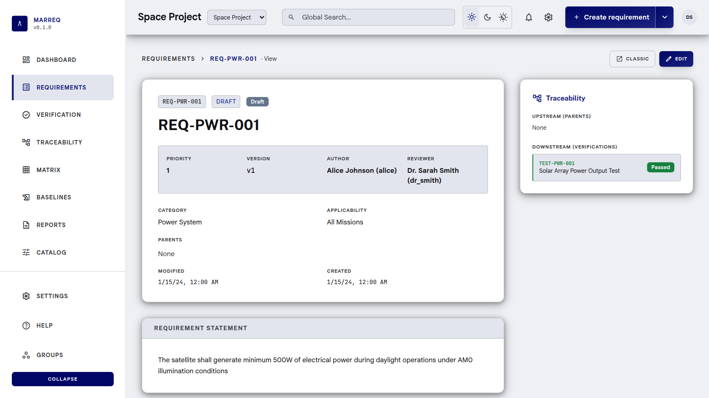

Requirements
Version every change. Keep the complete history.
Marreq
Open source requirements engineering
Hierarchical requirements, verification, approvals, and immutable baselines—with ReqIF, REST APIs, and optional MCP for AI assistants.

Product
Marreq keeps requirements, verifications, and their links under one project-scoped system— so hierarchy, version history, approval, and suspect links stay visible as the product evolves.
Version every change. Keep the complete history.
Cover requirements with verifications. Surface suspect links.
Freeze requirement versions and the matrix at a point in time.
Draft → Reviewed → Approved, with project reviewers.
Import and export live projects or baselines.
Project-scoped REST/JSON with session or Bearer auth.
Optional tools for AI assistants—controlled modes from read-only to draft and trace write, with audit events. Requirements remain the core product.
How Marreq works
Organize hierarchical requirements with metadata, comments, and immutable version history. Editing an approved requirement creates a new draft version.

Link requirements to verifications. The matrix and coverage views highlight gaps, orphans, and suspect links after related changes.

A baseline captures which requirement version was current and the traceability matrix at that moment. Baselines are immutable at the database and API level, and can be diffed against current or exported as ReqIF.
Product tour
Screens not already featured above. Open any image for a closer look.
Open platform
Marreq is AGPL-3.0 licensed, self-hostable, and built around a Rust API and React SPA. Inspect the code, run it yourself, contribute improvements.
/api, session or Bearer auth
Optional semantic search when embeddings are enabled. Ollama setup
Developers
Get started, integrate the API, or dig into the architecture. Full documentation lives in the repository.
Prerequisites: Docker Compose, Rust (stable), clang/libclang, and Node.js 20 for the SPA.
docker compose -f docker/docker-compose.yml up -d db
./marreq-core/scripts/db_setup.sh
./marreq-core/scripts/db_setup.sh --seed
cargo run -p marreq-server
cd frontend && npm install && npm run dev
Demo admin: alice / ChangeMe123!.
Full stack on port 8080: docker compose -f docker/docker-compose.yml up -d
Hierarchy, approval filters, comments, version history.
Manage verification records and link them to requirements.
Matrix and coverage; investigate suspect links.
Immutable snapshots, diff vs current, ReqIF export.
Excel/CSV and ReqIF on the project Import and Reports pages.
Project membership and reviewers control status and approvals.
JSON under /api. Local default: http://127.0.0.1:8000/api.
Behind Docker/Vite, use the SPA origin.
curl -s http://127.0.0.1:8000/api/auth/me
curl -s http://127.0.0.1:8000/api/projectsmarreq-server and marreq-cloudmcp-server/Contact
Questions, feedback, deployment discussions, integrations, and collaboration.
contact@marreq.comSponsorship
Interested in supporting development, infrastructure, documentation, or integrations? Reach out to discuss how you might help the open-source project.
sponsorship@marreq.com